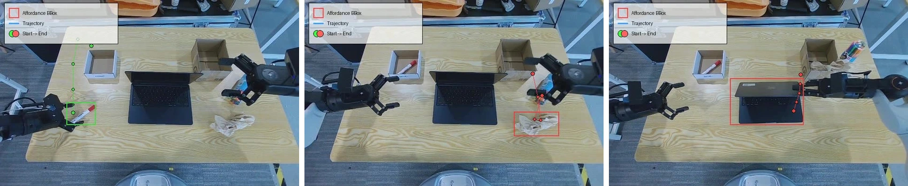
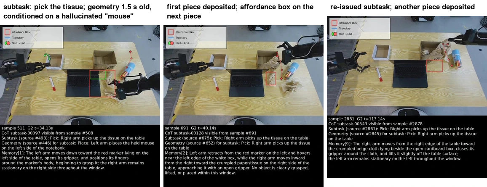

GoT-VLA
Guidance under Shift:
Deployment-Aligned Semantic Interfaces
for Vision–Language–Action Policies
Abstract
Explicit chain-of-thought (CoT) can improve vision–language–action (VLA) policies by exposing task progress and spatial intent, but guidance available during training is often more reliable and temporally aligned than online predictions at deployment, which may be incorrect, missing, or outdated. This mismatch can make a policy trained with reliable guidance brittle at deployment. Our flow-matching analysis bounds the deployment loss by training error, guidance-distribution coverage, and conditional drift, motivating two training principles: covering deployment-time guidance conditions and exposing the policy to temporal staleness. We therefore train a VLA policy with subtask descriptions, affordance regions, and image-space trajectories drawn from annotated, generated, corrupted, and missing guidance, while varying their physical age—the elapsed time from the source observation to policy use. Current observations and action supervision remain aligned. An asynchronously refreshed dependency graph overlaps reasoning and action generation while preserving an explicit and inspectable CoT interface. Controlled evaluations vary guidance reliability and physical age. We evaluate closed-loop success on LIBERO and on training and testing tasks of RoboTwin 2.0, as well as a real-world “desktop-cleaning” task and its variants, demonstrating robustness and generalization on physical robots.
Why Guidance Can Increase Action Error
A subtask description or spatial plan helps an action policy interpret what to do next. During execution, these predictions can be incorrect, missing, or outdated. Different fields also refresh at different times: a new subtask may arrive while the geometry still refers to an earlier operation. Training only with clean, synchronized annotations leaves the action policy unprepared for these combinations.
The paper analyzes expected squared flow-matching error with square-integrable targets and learned fields. Training and deployment share the distribution of observations, demonstrated actions, noise, and flow time, while the guidance distribution changes. For two fixed learned policies, the comparison is exact:
Here, G is the reduction in minimum achievable error from adding guidance; each e is a learned policy’s error above its own minimum. Guidance improves the learned policy when its information gain exceeds the additional error of using it.
With a finite deployment-to-training coverage coefficient β, the guided deployment excess risk satisfies:
The bound connects training fit εtrain (error above the training optimum), input coverage β (a bound on the complete input’s deployment-to-training density ratio), and conditional drift Γ (the deployment-averaged squared change in the optimal prediction at the same input). At the population training optimum, guided deployment excess risk equals Γ. This motivates training with the predictor’s own outputs, imperfect guidance, and varied physical ages.
Paper Section 3 and Appendix A give the definitions, assumptions, and proofs for this flow-matching analysis.
Approach

The Perceiver predicts structured guidance: memory summarizes observed task progress, subtask describes the current operation and target, affordance identifies object or target regions, and the 2D trajectory gives future end-effector points in image coordinates. The Worker generates continuous action chunks from the current camera views, robot state, instruction, and available guidance.
An Explicit, Inspectable CoT Interface
The Perceiver predicts four fields through question–answer tasks with shared model parameters. All queries receive the task instruction. Memory carries task history into subtask prediction; the subtask then conditions the spatial predictions.
| Field | Input context | Output |
|---|---|---|
| Memory | Completed-window video + prior memory | Summary of observed events |
| Subtask | Recent video + completed-window memory | Current operation and target |
| Affordance | Current image + available subtask | Object or target-region boxes |
| 2D trajectory | Current image + available subtask | Ordered future end-effector points |
Boxes and points use normalized image coordinates. Subtask and field ages enter the Worker as text; boxes and trajectory points are drawn on a copy of the current front-camera image, alongside the original views.
Three Stages of Training
- Train the Perceiver. Annotate demonstration videos and robot data with the four fields, then use supervised fine-tuning on general robot data and the target benchmark. Temporally jittered context and context dropout expose the Perceiver to earlier or missing inputs.
- Generate deployment-style predictions. Freeze the adapted Perceiver and run it over training demonstrations using its own predicted history. Each query uses observations and history available by its source time. Store the content, source time, and parsing status alongside the annotations.
- Train the Worker with mixed guidance and ages. Independently sample each field’s source and historical time while preserving the current observation and correct action target. Supply each selected field’s physical age.
| Source | What the Worker receives |
|---|---|
| GT | Annotated guidance from demonstrations |
| Pred | The adapted Perceiver’s outputs and actual source times |
| Noise | Small perturbations to geometric coordinates |
| Err | A subtask from another time or substantially displaced geometry |
| Missing | Empty fields through dropout and an initial interval without CoT |
Source weights and age ranges are benchmark-specific. Paper Section 4 and Appendix F describe annotation, generation, and training settings.
Asynchronous Reasoning and Action
Independent request loops refresh memory, subtask, affordance, and trajectory through a shared vLLM service. Parsed fields and their source times enter a shared cache. An older response cannot replace a result from a newer source.
At each action query, the Worker reads the latest available fields and computes their ages from the source observations. It generates actions while outstanding CoT requests continue. Return time determines availability; source time determines age. Cached fields grow older until updated, and explicit abstentions clear the corresponding field.

In sampled frames from a successful Base trial, subtask ages are 0.5–1.1 s and geometry ages are 1.0–2.1 s. The robot continues using the last accepted guidance through up to eight consecutive rejected Perceiver updates. The appendix reports these observed ages separately from the training settings.
Experiments
Real-Robot Desktop Cleaning
“Clean the desktop by putting every item in its place and closing the notebook.”
We deploy on an AgiBot G2 dual-arm robot. The policy is adapted only on the Base dataset of 866 demonstrations and evaluated directly on changes in appearance, object category, item count, pose, and task progress.
The robot uses a head camera and two wrist cameras. Both models share one RTX 5090 GPU. The Worker predicts 14-dimensional end-effector deltas at 30 Hz in 50-step chunks; the robot executes the first 25 steps before the next query. Both our policy and the π₀.₅ baseline are evaluated after 6,000 adaptation updates on the same demonstrations.
The videos below retain the full recorded timeline and play at 2× source speed. Camera views crop the lower text panel; original recordings remain available below each video. Each video shows one trial, separate from the five-trial mean scores. The Moved recording includes a failed paper subtask.
Base
Reference layout. The robot places the pen, deposits the paper, stands the marker box upright, and closes the laptop.
Recorded trial: 4 / 4 subtasks completed.
Original recording with guidance ↗Object
Pen and paper appearances change while the other parts of the reference scene remain fixed.
Recorded trial: 4 / 4 subtasks completed.
Original recording with guidance ↗Category
Objects from different categories test transfer beyond the Base instances. This recording has no guidance overlay.
Recorded trial: 4 / 4 subtasks completed.
Original recording (raw camera) ↗Multi
Three sheets of paper require repeated collection. The robot clears the paper and completes the other subtasks.
Recorded trial: 4 / 4 subtasks completed.
Original recording with guidance ↗Moved
Loose items move by about 10 cm, with rotations of the paper, box, and laptop. The paper remains outside the bin.
Recorded trial: 3 / 4 subtasks; paper fails.
Original recording with guidance ↗Laptop done
The laptop starts closed. The robot handles the remaining pen, paper, and marker-box subtasks.
Recorded trial: 3 / 3 scored subtasks completed.
Original recording with guidance ↗Paper done
The paper starts in the bin. The robot handles the remaining pen, marker-box, and laptop subtasks.
Recorded trial: 3 / 3 scored subtasks completed.
Original recording with guidance ↗
Real-Robot Results
| Condition | π₀.₅ | Ours |
|---|---|---|
| Base | 40 | 95 |
| Object | 30 | 90 |
| Category | 15 | 90 |
| Multi | 25 | 71 |
| Moved | 15 | 55 |
| Laptop done | 46.7 | 86.7 |
| Paper done | 53.3 | 73.3 |
Mean overall task scores (%) over five trials per condition. Scores average the applicable subtasks, with partial credit for paper collection in Multi. These are mean subtask scores, not whole-task success rates.
Which Subtasks Improve—and Which Remain Difficult?
| Condition | Pen | Paper | Box | Laptop |
|---|---|---|---|---|
| Base | 100 | 100 | 80 | 100 |
| Object | 80 | 100 | 80 | 100 |
| Category | 80 | 100 | 80 | 100 |
| Multi | 80 | 84 | 40 | 80 |
| Moved | 40 | 60 | 40 | 80 |
| Laptop done | 100 | 100 | 60 | — |
| Paper done | 80 | — | 40 | 100 |
Our mean subtask scores (%) over five trials. A dash marks an initially completed subtask excluded from scoring. Goals must remain completed for 2 s; Multi allows partial paper credit.
In Base, pen placement and paper collection improve from 0% for π₀.₅ to 100% for our policy; both score 80% on standing the box upright. Category reaches 90% overall after Base-only adaptation. Moved remains the hardest condition at 55% overall, and the subtask breakdown also exposes difficulty with box standing in Multi and Paper done.
LIBERO Benchmark
| Method | Spatial | Object | Goal | Long | Mean |
|---|---|---|---|---|---|
| π₀.₅ | 98.5 | 99.0 | 97.5 | 93.5 | 97.1 |
| Embodied-R1.5-VLA | 98.3 | 99.2 | 97.6 | 93.9 | 97.2 |
| Ours | 99.2 | 100.0 | 99.0 | 97.8 | 99.0 |
Success rates (%) across four suites, with 500 rollouts per task. These methods were evaluated by the authors. Our method reaches 99.0% mean success; the paper includes the full comparison and distinguishes author evaluations from reported results.
RoboTwin 2.0 Benchmark
| Method | Train | Test |
|---|---|---|
| π₀ | 50.88 | 12.00 |
| π₀.₅ (observation only) | 77.28 | 19.48 |
| Wall-X | 68.28 | 14.88 |
| VLA-JEPA | 63.36 | 12.68 |
| Ours | 89.12 | 25.04 |
Success rates (%) on a fixed split of 25 training and 25 held-out testing tasks, with 100 rollouts per task. All methods are evaluated on the same split. Our method reaches 25.04% success on held-out tasks.
What Matters in Training?
| Fine-tuning variant | Train | Test | Test drop |
|---|---|---|---|
| F: complete recipe | 89.12 | 25.04 | — |
| A1: GT only | 85.92 | 21.68 | 3.36 |
| A2: no numeric age | 83.04 | 17.48 | 7.56 |
| A3: no extra age jitter | 85.16 | 19.84 | 5.20 |
| A4: Pred only | 87.48 | 23.56 | 1.48 |
Success rates (%) on RoboTwin 2.0. Changes apply only to downstream fine-tuning; all variants share the general Worker checkpoint, Perceiver, data, and budget. Test drop is the percentage-point decrease from F.
Pred-only fine-tuning outperforms GT-only on both splits, while the complete mixture gives the highest success. Removing numeric ages or extra age jitter produces larger Test drops. These comparisons support supplying both each field’s age and delayed examples during fine-tuning.
Action Error under Guidance Shift
On fixed RoboTwin training states, the complete training recipe is less sensitive to wrong guidance and shows a smaller error increase under stale guidance.
We use the 5,000-update ablation checkpoints and keep observations and sampling noise fixed while replacing all three guidance fields. The metric is root-mean-square action error against demonstration actions.
Wrong and Missing Guidance
| Recipe | Correct | Wrong | Missing |
|---|---|---|---|
| Observation only | — | — | 3.10 |
| GT only | 1.97 | 2.85 | 2.64 |
| Pred only | 1.95 | 2.38 | 2.31 |
| Complete recipe | 1.96 | 1.97 | 1.99 |
25 tasks, 75 fixed states. Wrong guidance raises GT-only error by 0.88 and complete-recipe error by 0.01.
Stale and Missing Guidance
| Recipe | Fresh | Stale | Missing |
|---|---|---|---|
| Observation only | — | — | 2.27 |
| No extra jitter | 1.71 | 2.13 | 1.92 |
| Complete recipe | 1.85 | 1.96 | 1.90 |
23 tasks, 77 fixed states. Fresh guidance is 0.2 s old; stale GT guidance is 3 s old and carries its true age.
Action error in ×10⁻² rad (lower is better). The two tests use their respective fixed state sets; compare recipes within each table.
The complete recipe keeps error close to the correct-guidance result when guidance is wrong or absent. Temporal jitter reduces the error increase under stale guidance from 0.42 to 0.11, with a tradeoff: the no-extra-jitter variant has lower error under fresh guidance (1.71 versus 1.85).
Recovery from a Failed Grasp

In the paper’s Base case study, the Worker fails to lift the tissue. The Perceiver sees that the tissue remains on the table and predicts another grasp; the Worker retries and deposits it in the bin. The training data contain no failed-grasp-then-retry sequences. The paper reports this behavior as emerging from the two models’ interaction at deployment.
Repeated Collection with Imperfect Geometry

At the first grasp, the subtask asks for the tissue while the geometry is 1.5 s old and conditioned on an earlier subtask referring to a “held mouse” absent from the table. After each deposit, the subtask again requests collection until the paper subtask succeeds. The Worker collects separated pieces while using the observed scene alongside imperfect geometry.
The paper’s grasp-retry and piecewise-collection cases are separate observations. The videos above and the appendix figures document different recorded trials.
Discussion and Future Work
The results support training the action policy for the guidance conditions it encounters during asynchronous execution. Benchmark success, controlled guidance-shift tests, and real-robot trials examine complementary parts of this question. The held-out RoboTwin score of 25.04% and the lower real-robot score under pose changes leave substantial room for improvement.
The current system trains and deploys two models. Resource limits prevented joint pretraining of the Perceiver and Worker in one model. The paper proposes future work on a mixture-of-transformers architecture combining a vision–language model with an action expert and joint pretraining of both components.
Resources
Paper and appendix · Video processing record
The paper includes the analysis, training details, evaluation protocols, and real-robot scoring rules. Public release of training code and CoT-annotated data is planned, as stated in the manuscript.
BibTeX
Anonymous manuscript. The bibliographic entry will be updated with the public paper release.
@misc{gotvla2026guidance,
title = {Guidance under Shift: Deployment-Aligned Semantic Interfaces
for Vision--Language--Action Policies},
author = {Anonymous Authors},
year = {2026},
note = {Manuscript}
}